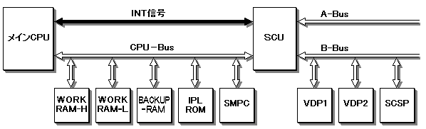
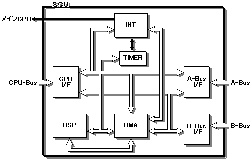

★HARDWARE Manual
★SCUユーザーズマニュアル
★HARDWARE Manual
★SCUユーザーズマニュアル
DMAコントローラは、内部レベル2-0およびDSPの合計4チャンネルのDMA転送を制御し、 CPU、A-Bus、B-Bus間で自由にデータ転送を実行することができます。また、 A-BusとB-BusとのDMA実行中に、CPUは、CPU-Busを使用してワークエリアをアクセス することが可能です。但し、DSPからのデータ転送要求では、必ずDSPの領域を使用し なければならず、例えば、DSPの領域を使用しないA-BusとB-BusとのDMA転送は、DSP からデータ転送要求はできません。
割り込みコントローラは、A-Bus、B-Bus、SMPCからの割り込みを含めて、SCU内の 割り込み全体を制御します。また、タイマによる割り込みをサポートしており、画面 に同期して割り込みを発生させることができます。
DSPは、メインCPUでは負荷がかかりすぎて、実現が困難な処理についてそれを実現
する役割を果たします。DSPは、メインCPUの1/2の動作周波数で動作します。
よって、1stepを約70nsecで実行します。
A-Busには外部システムとしてCDやカートリッジ等のソフトウェアを供給する 媒体が接続します。B-Busには、VDP1、VDP2、SCSPが接続され、映像・音声の制御をします。
図1.1 システム構成図

図1.2 ブロック図

★HARDWARE Manual
★SCUユーザーズマニュアル